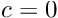
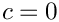
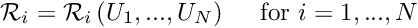
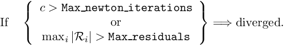
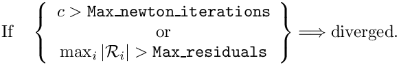
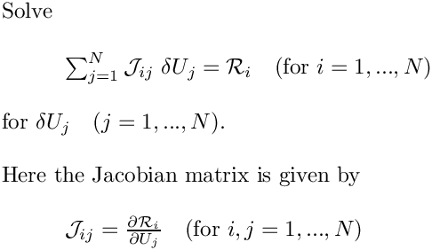
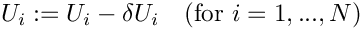
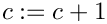
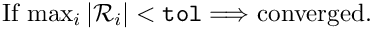
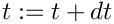

oomph-lib's Problem class provides a black-box Newton solver,
Problem::newton_solve(), which allows the driver code to be as compact as this:
While the availability of a black-box Newton solver is helpful, it is sometimes necessary to interact with the solution process, e.g. to perform certain additional tasks during the Newton iteration, or to analyse the convergence (or divergence!) of the iteration in more detail. For this purpose oomph-lib's Problem class has a number of empty virtual member functions that are executed at key stages of the Newton iteration. Two of these functions (Problem::actions_before_newton_solve() and Problem::actions_after_newton_solve() ) are pure virtual functions that must be implemented in every specific Problem, though they may, of course, be implemented as empty functions. Other functions may be overloaded to provide more detailed control.
Problem::newton_solve()
The following table lists the main steps performed by oomph-lib's Newton solver and indicates at which point the various "action" functions are executed.
| SEQUENCE OF MATHEMATICAL STEPS | SEQUENCE OF FUNCTION CALLS / KEY CONTROL PARAMETERS |
| Step 1: Perform actions before solve. |  | Problem::actions_before_newton_solve();
|
| Step 2: Initialise counter for number of Newton iterations. |  | unsigned count=0;
|
| Step 3: Perform actions before the next Newton step |  | Problem::actions_before_newton_step();
|
| Step 4a: Perform actions before Newton convergence check |
| Problem::actions_before_newton_convergence_check();
|
| Step 4b: Compute residual vector |
| Vector<double> residuals;
Problem::get_residuals(residuals);
|
| Step 4c: Convergence check. If converged go to Step 13 |  | ...
// Check convergence
if (max_res<Problem::Newton_solver_tolerance)
{
...
}
...
|
| Step 5: Check if maximum residual or number of iterations exceed their maxima. |  | ...
// Check divergence/non-convergence
if ((max_res>Problem::Max_residuals) ||
(count == Problem::Max_newton_iterations))
{
...
// Throw an error
throw NewtonSolverError(count,max_res);
}
...
|
| Step 6: Solve linear system for correction of unknowns |  | // Use the linear solver specified by
// Problem::linear_solver_pt() to assemble
// and solve the linear system.
...
|
| Step 7: Apply the corrections to the solution |  | // Update the unknowns
...
|
| Step 8: Perform actions after Newton step |
| Problem::actions_after_newton_step();
|
| Step 9: Increment counter for number of Newton iterations |  | count++;
|
| Step 10: Perform actions before Newton convergence check |
| Problem::actions_before_newton_convergence_check();
|
| Step 11: Compute residual vector |
| Vector<double> residuals;
Problem::get_residuals(residuals);
|
| Step 12: Convergence check. If converged go to Step 13, else go to Step 3. |  | ...
// Check convergence
if (max_res<Problem::Newton_solver_tolerance)
{
...
}
...
|
| Step 13: Converged. Perform actions after solve. |
| Problem::actions_after_newton_solve();
|
![\[
{\cal R}_i = {\cal R}_i\left(U_1,...,U_{N}\right)
\mbox{\ \ \ \ for $i=1,...,N$}
\]](form_4.png)
The function Problem::actions_before_newton_solve() is often used to update boundary conditions when performing parameter studies in which these change; Problem::actions_after_newton_solve() may be used to automatically perform any post-processing when a solution has been obtained. The function Problem::actions_before_newton_convergence_check() makes it possible to update any "dependent" problem parameters, i.e. parameters that depend on one or more of the unknowns in the problem but are not updated automatically when the unknown is changed. This arises most frequently in free-boundary problems in which the position of the nodes in the "bulk" mesh is determined by an algebraic node update procedure. When the Newton method updates the Data values that determine the shape of the domain boundary in Step 7, the nodal positions themselves are not updated automatically unless the node update function is executed in Problem::actions_before_newton_convergence_check(). See the discussion of the free-boundary Poisson problem for an example of its use.
Optimisation for linear problems
Recall that, by default, oomph-lib regards all problems as nonlinear. Provided a good initial guess for the unknowns is available, the Newton solver will converge quadratically towards the solution. Within this framework, linear problems are simply special cases for which the Newton iteration converges in one step. However, if the problem is known to be linear, a few of the steps in the generic Newton iteration are unnecessary. For instance, it is not necessary to check the residual before or after the Newton step as we know that the exact solution will have been obtained (modulo roundoff errors) after step 7. The computation of the global residual vectors in steps 4 and 11 (which require a finite amount of cpu time) are therefore superfluous and are omitted if the "user" declares a problem as linear by setting the flag
which is initialised to true in the constructor of the Problem base class to false.
Problem::unsteady_newton_solve(...)
The following table lists the main steps performed by oomph-lib's unsteady Newton solver and indicates at which point the various "action" functions are executed. The arguments passed to the function are the value of the timestep dt and a boolean flag shift_values which indicates whether or not history values are to be shifted.
| SEQUENCE OF MATHEMATICAL STEPS | SEQUENCE OF FUNCTION CALLS / KEY CONTROL PARAMETERS |
| Step 1: Perform actions before implicit timestep. |
| Problem::actions_before_implicit_timestep();
|
| Step 2: Shift time values and dts, according to control flag. |
| if(shift_values) { shift_time_values(); }
|
| Step 3: Advance global time and set current value of dt. |  | time_pt()->time()+=dt;
time_pt()->dt()=dt;
|
| Step 4: Loop over all timesteppers and set weights. |
| for(...)
{
time_stepper_pt(i)->set_weights();
}
|
| Step 5: Solve the non-linear problem for this timestep with Newton's method. |
| Problem::newton_solve();
|
| Step 6: Perform actions after implicit timestep. |
| Problem::actions_after_implicit_timestep();
|